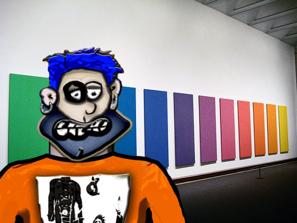

CSS Level Two
So... I've now been up for the past 30 hours working on these CSS projects... not that I've been stuck or anything... it's just how my OCD works... when I'm into a project... it seems that I can go a few days without any sleep... as long
as I'm feeling challenge...
I have to be careful though... because when I go sleepless for too long... I can trigger a manic episode... which sucks because there is a sweet spot where I can get myself just sleep deprived enough to land in a twilight state... that
feels somewhere just outside of this reality... but not quite into the realm of dreams...
Up until a couple of years ago... when I was first diagnosed with OCD... I felt that my "experiments" were just a part of my creative process... I would only joke about being Obsessive Compulsive for things like not being able to leave the
house unless it was on a quarter hour and have had one uniform that I've worn for most of my life... buying seven of the same things... every couple of years...
I always felt that I was too much of a slob to really suffer from the disorder... I also felt that all of my rituals were frivolous... never fearing any consequences if I didn't keep my belongings in a specific order... my OCD is more
internal... where I can get hyper vigilate about rules and order that I fully understand only matters to me...
For example... I used to organize my CD and DVD by the colors palletes of their spines... with the background colors being the focus for the primary sort... with a secondary sort based of the colors of the text... I guess the fact that I
didn't freak out when others didn't commit to my decor choice made me feel that I didn't have it all that bad...
It wasn't until I almost had a complete breakdown after taking a day off from writing... after over a decade without missing a session... because I was understandably burnout... that I finally realized that my projects were based on my
obsessions as much as they are driven by an actual desire to create art... art mainly focused on my other mental disorders... so this is not a case of denial... I'm just now getting to see with a new light...
So... now that you have a little history of my obsession with color... it's time to introduce the task at hand... which is to digitally recreate the image below... an art installment from the 70's called Spectrum V... using nothing but HTML
and CSS...
Let's see how this turns out!!!

Spectrum V.0420